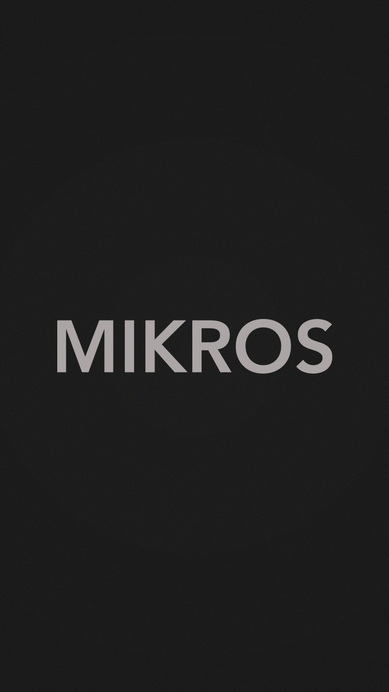
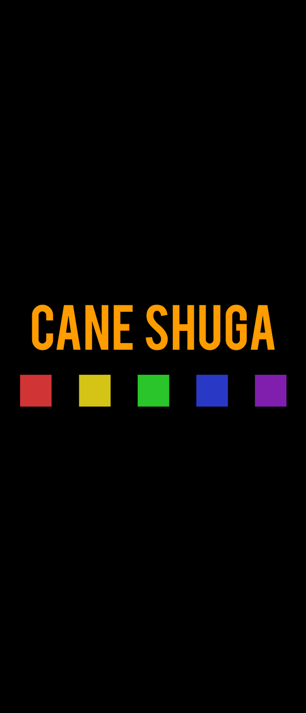

Le
Lab
Bienvenue dans le Lab ! Ici, vous retrouverez des expérimentations ou des plus petits projets.

Particles
Site Web
Particles
Site Web
Cette expérimentation voit son origine au croisement de deux souhaits : créer un écran de chargement pour le web et m'initier aux Canvas HTML5. Je me suis donc lancé dans le développement de systèmes de particules basé sur les déplacements de la souris, sur le clic ou encore sur des curseurs glissières.
L'idée était de faire évoluer chacune des particules de façon indépendante mais avec des comportements similaires. Ainsi, cette expérimentation a été l'occasion de me former à la programmation orientée objet. Ce fut aussi l'occasion de mettre en pratique mes anciens cours de physique avec le calcul de fonctions de chute libre.

Jeu Couleurs
Site Web
Jeu Couleurs
Site Web

Il s'agit non seulement de mon tout premier projet JavaScript mais aussi de mon tout premier projet de développement en autonomie. Il s'agit d'un petit jeu de couleurs. Contrairement à mes autres projets qui mettent la logique au service du visuel, celui-ci, moins artistique, met le visuel au service de la logique.
En effet, un jeu “un joueur” réduit à sa plus simple forme est une interaction entre le joueur et “la machine”. Ce fut donc l'occasion d'expérimenter la gestion des inputs (entrés) et des outputs (sorties) utilisateurs avec la gestion de formulaire HTML et l'animation du DOM. Pour me faciliter la tâche, je me suis servi de la bibliothèque JQuery.

Mikros
Motion Design
Mikros
Motion Design


Lors de ma 1ère année en MMI, j'ai effectué un stage à Mikros Image en tant que VFX artist au sein du département Motion Design. J’ai profité de l’occasion d’être entouré de Motion Designers expérimentés pour réaliser une animation à l’effigie de cette société de post-production.
Je suis parti de l’idée de représenter Mikros au milieu de tracés géométriques fins comme sur un plan de travail d’architecte. Ma volonté était que le mot apparaisse le long de ces tracés. Pour casser avec l’aspect trop rigide d’un tel résultat, j’ai donné vie à chacune des lettres. Pour ce faire, j’ai essayé de créer des mouvements réalistes et naturels basés sur la réalité.

Cane Shuga
Motion Design
Cane Shuga
Motion Design
La musique Cane Shuga m’a beaucoup inspiré dès ses premières écoutes. Cette musique aux tonalités bien détachées et à la mélodie assez répétitive est un terrain de jeu idéal pour mettre un premier pied dans les animations musicales. Ce projet, initialement très prometteur s’est vu grandement ralenti au milieu de sa conception. En effet, l’absence d’une idée parfaitement définie et ma trop grande ambition vis-à-vis de ce projet ont fait que cette animation ne me satisfait pas. Néanmoins, j’ai grandement appris grâce à sa conception et cela m’a permis de créer de nouvelles animations dont je suis très fier.

Pop Culture
Motion Design
Pop Culture
Motion Design
Ce projet est le plus ancien que vous retrouverez ici. J’ai réalisé cet exercice en 2016 pour améliorer ma maîtrise d’After Effect. Pour cette animation, je souhaitais rester dans une forme de minimalisme technique en n’utilisant que très peu de calque de formes. Néanmoins, graphiquement, je décide de me détacher un tant soit peu du Flat design pur de mes débuts en ajoutant des effets se voulant plus réalistes.